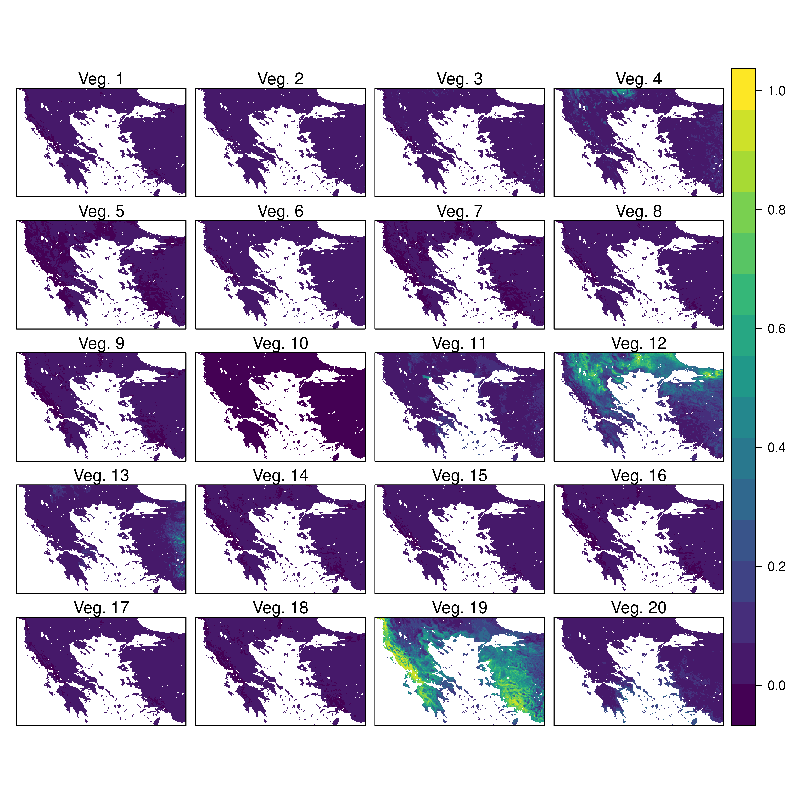
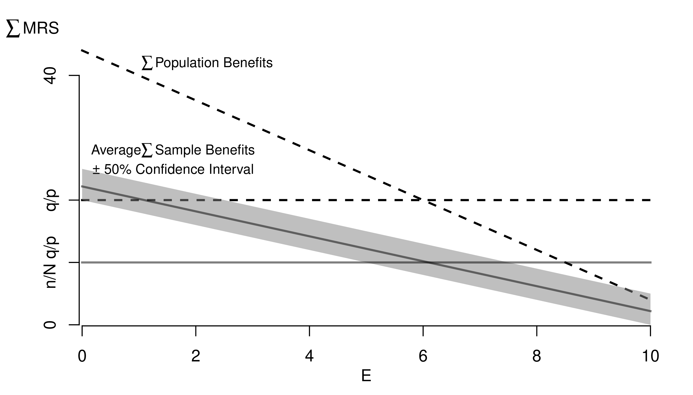

7 Data Analysis
7.1 Inputs
Reading Data.
The first step in data analysis is getting data into R. There are many ways to do this, depending on your data structure. Perhaps the most common case is reading in a csv file.
Code
# Read in csv (downloaded from online)
# download source 'http://www.stern.nyu.edu/~wgreene/Text/Edition7/TableF19-3.csv'
# download destination '~/TableF19-3.csv'
read.csv('~/TableF19-3.csv')
# Can read in csv (directly from online)
# dat_csv <- read.csv('http://www.stern.nyu.edu/~wgreene/Text/Edition7/TableF19-3.csv')Reading in other types of data can require the use of “packages”. For example, the “wooldridge” package contains datasets on crime. To use this data, we must first install the package on our computer. Then, to access the data, we must first load the package.
Code
We can use packages to access many different types of data. To read in a Stata data file, for example, we can use the “haven” package.
Code
# Read in stata data file from online
#library(haven)
#dat_stata <- read_dta('https://www.ssc.wisc.edu/~bhansen/econometrics/DS2004.dta')
#dat_stata <- as.data.frame(dat_stata)
# For More Introductory Econometrics Data, see
# https://www.ssc.wisc.edu/~bhansen/econometrics/Econometrics%20Data.zip
# https://pages.stern.nyu.edu/~wgreene/Text/Edition7/tablelist8new.htm
# R packages: wooldridge, causaldata, Ecdat, AER, ....Cleaning Data.
Data transformation is often necessary before analysis, so remember to be careful and check your code is doing what you want. (If you have large datasets, you can always test out the code on a sample.)
Code
# Function to Create Sample Datasets
make_noisy_data <- function(n, b=0){
# Simple Data Generating Process
x <- seq(1,10, length.out=n)
e <- rnorm(n, mean=0, sd=10)
y <- b*x + e
# Obervations
xy_mat <- data.frame(ID=seq(x), x=x, y=y)
return(xy_mat)
}
# Two simulated datasets
dat1 <- make_noisy_data(6)
dat2 <- make_noisy_data(6)
# Merging data in long format
dat_merged_long <- rbind(
cbind(dat1,DF=1),
cbind(dat2,DF=2))Now suppose we want to transform into wide format
Code
# Merging data in wide format, First Attempt
dat_merged_wide <- cbind( dat1, dat2)
names(dat_merged_wide) <- c(paste0(names(dat1),'.1'), paste0(names(dat2),'.2'))
# Merging data in wide format, Second Attempt
# higher performance
dat_merged_wide2 <- merge(dat1, dat2,
by='ID', suffixes=c('.1','.2'))
## CHECK they are the same.
identical(dat_merged_wide, dat_merged_wide2)
## [1] FALSE
# Inspect any differences
# Merging data in wide format, Third Attempt with dedicated package
# (highest performance but with new type of object)
library(data.table)
dat_merged_longDT <- as.data.table(dat_merged_long)
dat_melted <- melt(dat_merged_longDT, id.vars=c('ID', 'DF'))
dat_merged_wide3 <- dcast(dat_melted, ID~DF+variable)
## CHECK they are the same.
identical(dat_merged_wide, dat_merged_wide3)
## [1] FALSEOften, however, we ultimately want data in long format
Code
# Merging data in long format, Second Attempt with dedicated package
dat_melted2 <- melt(dat_merged_wide3, measure=c("1_x","1_y","2_x","2_y"))
melt_vars <- strsplit(as.character(dat_melted2$variable),'_')
dat_melted2$DF <- sapply(melt_vars, `[[`,1)
dat_melted2$variable <- sapply(melt_vars, `[[`,2)
dat_merged_long2 <- dcast(dat_melted2, DF+ID~variable)
dat_merged_long2 <- as.data.frame(dat_merged_long2)
## CHECK they are the same.
identical( dat_merged_long2, dat_merged_long)
## [1] FALSE
# Further Inspect
dat_merged_long2 <- dat_merged_long2[,c('ID','x','y','DF')]
mapply( identical, dat_merged_long2, dat_merged_long)
## ID x y DF
## TRUE TRUE TRUE FALSEFor more tips, see https://raw.githubusercontent.com/rstudio/cheatsheets/main/data-import.pdf and https://cran.r-project.org/web/packages/data.table/vignettes/datatable-reshape.html
7.2 Outputs
Polishing.
Your first figures are typically standard.
Code
Edit your plot to focus on the most useful information. For others to easily comprehend your work, you must also polish the plot.
Code
When polishing, you must do two things
- Add details that are necessary to understand the figure
- Remove unnecessary details (see e.g., https://www.edwardtufte.com/notebook/chartjunk/ and https://www.biostat.wisc.edu/~kbroman/topten_worstgraphs/)
Code
# Another Example
xy_dat <- data.frame(x=x, y=y)
par(fig=c(0,1,0,0.9), new=F)
plot(y~x, xy_dat, pch=16, col=rgb(0,0,0,.05), cex=.5,
xlab='', ylab='') # Format Axis Labels Seperately
mtext( 'y=0.25 x + e\n e ~ standard-normal', 2, line=2.2)
mtext( expression(x%in%~'[0,10]'), 1, line=2.2)
abline( lm(y~x, data=xy_dat), lty=2)
title('Plot with good features, but too excessive in several ways',
adj=0, font.main=1)
# Outer Legend (https://stackoverflow.com/questions/3932038/)
outer_legend <- function(...) {
opar <- par(fig=c(0, 1, 0, 1), oma=c(0, 0, 0, 0),
mar=c(0, 0, 0, 0), new=TRUE)
on.exit(par(opar))
plot(0, 0, type='n', bty='n', xaxt='n', yaxt='n')
legend(...)
}
outer_legend('topright', legend='single data point',
title='do you see the normal distribution?',
pch=16, col=rgb(0,0,0,.1), cex=1, bty='n')
For useful tips, see C. Wilke (2019) “Fundamentals of Data Visualization: A Primer on Making Informative and Compelling Figures” https://clauswilke.com/dataviz/
Saving.
You can export figures with specific dimensions
For plotting math, see https://astrostatistics.psu.edu/su07/R/html/grDevices/html/plotmath.html and https://library.virginia.edu/data/articles/mathematical-annotation-in-r
For exporting options, see ?pdf.
For saving other types of files, see png("*.png"), tiff("*.tiff"), and jpeg("*.jpg")
For some things to avoid, see https://www.data-to-viz.com/caveats.html
Interactive Figures.
Histograms. See https://plotly.com/r/histograms/
Code
pop_mean <- mean(USArrests$UrbanPop)
murder_lowpop <- USArrests[USArrests$UrbanPop< pop_mean,'Murder']
murder_highpop <- USArrests[USArrests$UrbanPop>= pop_mean,'Murder']
library(plotly)
fig <- plot_ly(alpha=0.6,
hovertemplate="%{y}")
fig <- fig %>% add_histogram(murder_lowpop, name='Low Pop. (< Mean)')
fig <- fig %>% add_histogram(murder_highpop, name='High Pop (>= Mean)')
fig <- fig %>% layout(barmode="stack") # barmode="overlay"
fig <- fig %>% layout(
title="Crime and Urbanization in America 1975",
xaxis = list(title='Murders Arrests per 100,000 People'),
yaxis = list(title='Number of States'),
legend=list(title=list(text='<b> % Urban Pop. </b>'))
)
figBoxplots. See https://plotly.com/r/box-plots/
Code
USArrests$ID <- rownames(USArrests)
fig <- plot_ly(USArrests,
y=~Murder, color=~cut(UrbanPop,4),
alpha=0.6, type="box",
pointpos=0, boxpoints = 'all',
hoverinfo='text',
text = ~paste('<b>', ID, '</b>',
"<br>Urban :", UrbanPop,
"<br>Assault:", Assault,
"<br>Murder :", Murder))
fig <- layout(fig,
showlegend=FALSE,
title='Crime and Urbanization in America 1975',
xaxis = list(title = 'Percent of People in an Urban Area'),
yaxis = list(title = 'Murders Arrests per 100,000 People'))
figScatterplots. See https://plotly.com/r/bubble-charts/
Code
# Simple Scatter Plot
#plot(Assault~UrbanPop, USArrests, col=grey(0,.5), pch=16,
# cex=USArrests$Murder/diff(range(USArrests$Murder))*2,
# main='US Murder arrests (per 100,000)')
# Scatter Plot
USArrests$ID <- rownames(USArrests)
fig <- plot_ly(
USArrests, x = ~UrbanPop, y = ~Assault,
mode='markers',
type='scatter',
hoverinfo='text',
text = ~paste('<b>', ID, '</b>',
"<br>Urban :", UrbanPop,
"<br>Assault:", Assault,
"<br>Murder :", Murder),
color=~Murder,
marker=list(
size=~Murder,
opacity=0.5,
showscale=T,
colorbar = list(title='Murder Arrests (per 100,000)')))
fig <- layout(fig,
showlegend=F,
title='Crime and Urbanization in America 1975',
xaxis = list(title = 'Percent of People in an Urban Area'),
yaxis = list(title = 'Assault Arrests per 100,000 People'))
figIf you have many point, you can also use a 2D histogram instead. https://plotly.com/r/2D-Histogram/.
Tables.
You can also export tables in a variety of formats, for other software programs to easily read
Code
| Statistic | N | Mean | St. Dev. | Min | Max |
| Murder | 50 | 7.788 | 4.356 | 0.800 | 17.400 |
| Assault | 50 | 170.760 | 83.338 | 45 | 337 |
| UrbanPop | 50 | 65.540 | 14.475 | 32 | 91 |
| Rape | 50 | 21.232 | 9.366 | 7.300 | 46.000 |
You can create a basic interactive table to explore raw data.
For further data exploration, your plots can also be made interactive via https://plotly.com/r/. For more details, see examples and then applications.
Custom Figures.
Many of the best plots are custom made (see https://www.r-graph-gallery.com/). Here are some ones that I have made over the years.






7.3 R-Markdown Reports
We will use R Markdown for communicating results to each other. Note that R and R Markdown are both languages. R studio interprets R code make statistical computations and interprets R Markdown code to produce pretty documents that contain both writing and statistics. Altogether, your project will use
- R: does statistical computations
- R Markdown: formats statistical computations for sharing
- Rstudio: graphical user interface that allows you to easily use both R and R Markdown.
Homework reports are probably the smallest document you can create. These little reports are almost entirely self-contained (showing both code and output). To make them, you will need to
First install Pandoc on your computer.
Then install any required packages
Code
We will create simple reproducible reports via R Markdown.
Example 1: Data Scientism.
See DataScientism.html and then create it by
- Clicking the “Code” button in the top right and then “Download Rmd”
- Open with Rstudio
- Change the name and title to your own, make other edits
- Then point-and-click “knit”
Alternatively,
- Download the source file from DataScientism.Rmd
- Change the name and title to your own, make other edits
- Use the console to run
Example 2: Homework Assignment.
Below is a template of what homework questions (and answers) look like. Create a new .Rmd file from scratch and produce a .html file that looks similar to this:
Problem: Simulate 100 random observations of the form \(y=x\beta+\epsilon\) and plot the relationship. Plot and explore the data interactively via plotly, https://plotly.com/r/line-and-scatter/. Then play around with different styles, https://www.r-graph-gallery.com/13-scatter-plot.html, to best express your point.
Solution: I simulate \(400\) observations for \(\epsilon \sim 2\times N(0,1)\) and \(\beta=4\), as seen in this single chunk. Notice an upward trend.
Code
7.4 Further Reading
For more guidance on how to create Rmarkdown documents, see
- https://github.com/rstudio/cheatsheets/blob/main/rmarkdown.pdf
- https://cran.r-project.org/web/packages/rmarkdown/vignettes/rmarkdown.html
- http://rmarkdown.rstudio.com
- https://bookdown.org/yihui/rmarkdown/
- https://bookdown.org/yihui/rmarkdown-cookbook/
- https://dept.stat.lsa.umich.edu/~jerrick/courses/stat701/notes/rmarkdown.html
- An Introduction to the Advanced Theory and Practice of Nonparametric Econometrics. Raccine 2019. Appendices B & D.
- https://rmd4sci.njtierney.com/using-rmarkdown.html
- https://alexd106.github.io/intro2R/Rmarkdown_intro.html
If you are still lost, try one of the many online tutorials (such as these)
- https://www.rstudio.com/wp-content/uploads/2015/03/rmarkdown-reference.pdf
- https://github.com/adam-p/markdown-here/wiki/Markdown-Cheatsheet
- https://www.neonscience.org/resources/learning-hub/tutorials/rmd-code-intro
- https://m-clark.github.io/Introduction-to-Rmarkdown/
- https://www.stat.cmu.edu/~cshalizi/rmarkdown/
- http://math.wsu.edu/faculty/xchen/stat412/HwWriteUp.Rmd
- http://math.wsu.edu/faculty/xchen/stat412/HwWriteUp.html
- https://holtzy.github.io/Pimp-my-rmd/
- https://ntaback.github.io/UofT_STA130/Rmarkdownforclassreports.html
- https://crd150.github.io/hw_guidelines.html
- https://r4ds.had.co.nz/r-markdown.html
- http://www.stat.cmu.edu/~cshalizi/rmarkdown
- http://www.ssc.wisc.edu/sscc/pubs/RFR/RFR_RMarkdown.html
- http://kbroman.org/knitr_knutshell/pages/Rmarkdown.html